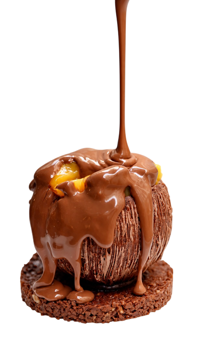
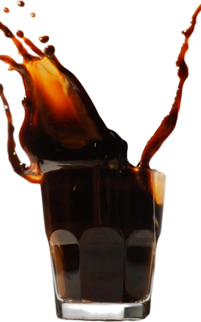
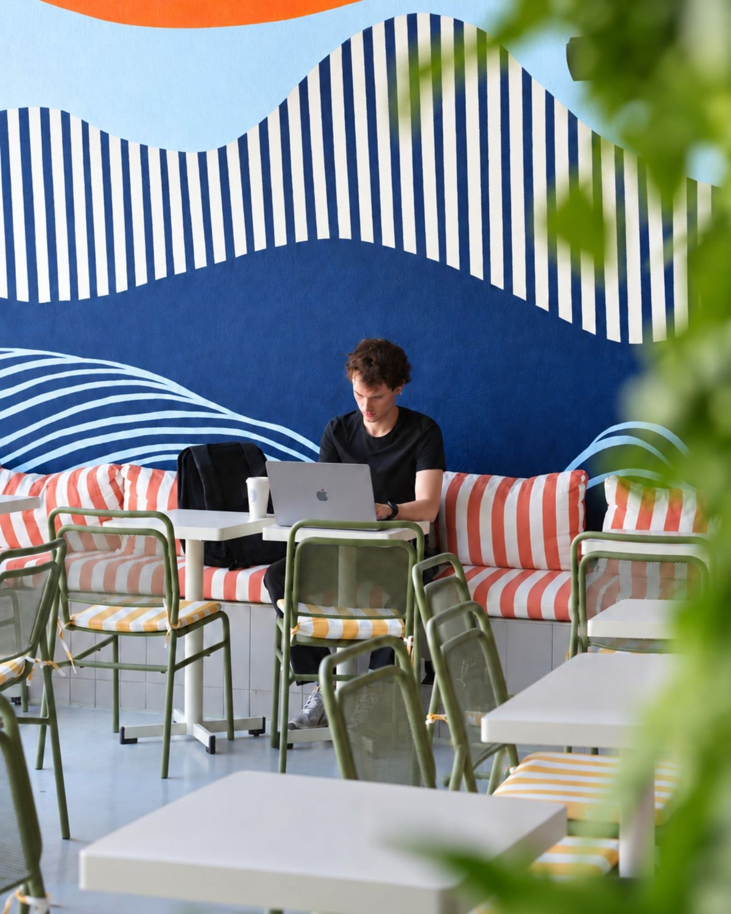
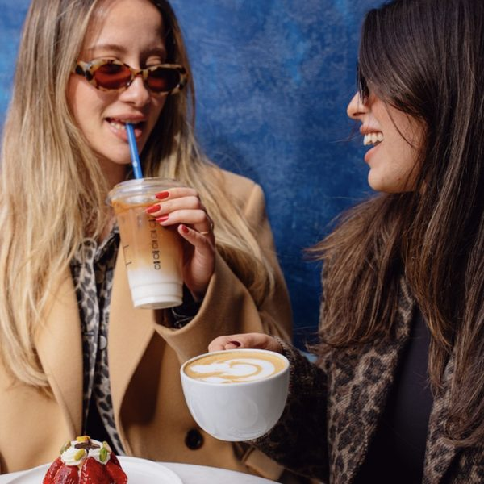
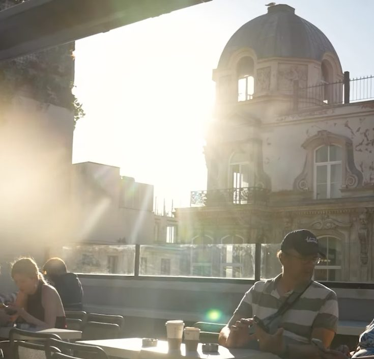
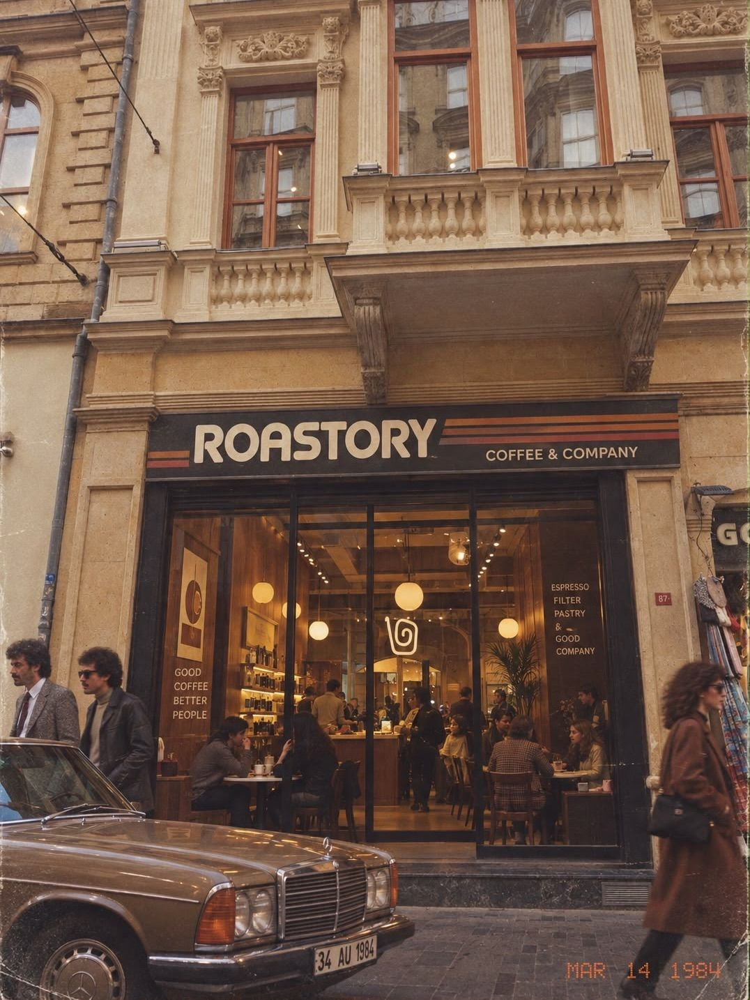

SabahZemin katPaket servis
Güne Filtreyle Başla
İstiklal kalabalığına karışmadan önce taze demlenmiş bir fincan.
Yol tarifiHer kavrumun bir hikâyesi var.
Görüşlerinizi Bizimle Paylaşın
Her katta ayrı bir köşe, ayrı bir hikâye.
Paris teras kültürü, Beyoğlu manzarasıyla.
Çekirdeğin hikâyesi fincanda başlar.
Roasting + Story = Roastory
Roastory, İstanbul'un kalbinde, İstiklal Caddesi'nde beş katlık tarihi bir binada yer alıyor. Adımızı kavurmanın ve hikâyenin birleşiminden aldık: her çekirdeğin bir yolculuğu, her fincanın anlatacak bir şeyi var. Yeni nesil kahvelerimizi göz alıcı tatlılarla buluşturuyor, ferah katlarımızda ve Beyoğlu'nun çatılarına bakan terasımızda sizi ağırlıyoruz.

Hangi saatte gelirseniz gelin, size uygun bir kat var · Alttaki notlar Yandex Haritalar misafir yorumlarının özetidir

İstiklal kalabalığına karışmadan önce taze demlenmiş bir fincan.
Yol tarifi
Kitabınızı ya da dizüstünüzü alın, yukarı katlarda yer hep var.
Yol tarifi
Beyoğlu çatılarına karşı bir dilim cheesecake ve soğuk demleme.
Yol tarifi
Yeni çekirdekler, mevsim tatlıları ve teras akşamları ilk size gelsin.